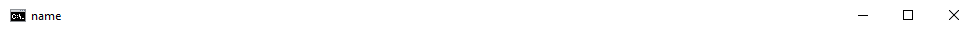

Что такое батники и с чем их едят
Пакетный файл или в простонародье батник - это файл, который запускает командную сроку или сокращенно cmd, которая построчно интерпретирует команды, записанные в нем. Подробнее смотрите на https://ru.wikipedia.org/wiki/Пакетный_файл.
Первая программа и основные команды
Чтобы сделать батник, нужно сначала создать текстовый файл с именем test и изменить расширение c .txt на .bat. О том, как можно это сделать, читайте здесь: https://remontka.pro/file-extensions. У вас должен появиться файл с такой иконкой:test.bat
Нажимаем на него ПРАВОЙ кнопкой мыши. Должно появиться диалоговое окно. Нажмем "Открыть". Должен открыться блокнот, пишем:
@echo off
echo Hello world!
pause
В 1-ой сроке ("@echo off") префикс '@ ' означает, что команда не будет выведена на экран(попробуйте его убрать :-) ), сама же команда (echo) выводит текст следующий за ней(см. строку 2), НО, если подать строку "off", все последующие команды будут действовать так, как будто перед ними стоит префикс '@', "echo on", соответственно, выключает этот режим. Чтобы вывести символ "%", его нужно дублировать, потом поймете почему :-), для вывода пустой строки поставьте "." после "echo"
В 3-ей строке команда выводит строку "press any key to continue . . ." (если у вас русский язык - "Для продолжения нажмите любую клавишу . . .") и останавливает программу до нажатия любой клавиши.
Наводим красоту
Команда "rem"не эта :)
не делает ничего и служит комментарием к коду
rem Это самая лучшая прога в мире!!!!!
Код включает русские символы и другие из ascii(например: "╬▓☼", можно скопировать с http://pascalguru.ru/psevdograf.html), иначе ascii символы превратятся в кракозябры:
chcp 65001
Следующий код код работает, как команда "pause", но ничего не выводит на экран и не реагирует на нажатие клавиш(я потом объясню, как это работает).
:m
goto m
А этот - меняет заголовок окна на "name"Заголовок окна
title name
Эта команда меняет цвет фона и текста, вместо a и b можно поставить любые шестнадцатеричные цифры(команда не сработает если a = b) см. таблицу ниже. Запись c одной буквой "а" аналогично записи "0a"
color abТаблица
Эта - досрочно завершает программу
exit
Переменные
Создать переменную можно с помощью команды set, синтаксис объявления следующий: P.S. это не совсем переменные, это скорее макросы (для тех к кто не знает C/C++ это именованный кусочек кода, имя которого заменяется на этот кусочек кода)
set a=Hello world
Если после "set" добавить флаг "/a" то:
set a=2+2
> 2+2
set /a a=2+2
> 4
Чтобы обратиться к переменной, нужно окружить ее символами "%" (так %name%), пример кода:
set /a a=%b%+%b%
echo %a%
Подробнее о переменных
Если добавить флаг "/p", то выводиться значение после символа "=", а переменной задается введенное значение(запустите этот код:)
@echo off
set /p a=Enter str
echo %a%
pause
следующий код вырезает строку от символа номер "a" до символа номер "b" НЕ включительно(счет идет с нуля, отрицательные числа - счет с конца от единицы). Если аргумент один, то он присваивается числу "b", а "a" = 0
%str:~a,b%
следующий заменяет подстроки "a" в строке на строки "b":
%str:a=b%
Циклы и условия
Цикл можно создать с помощью команды "for", синтаксис следующий:
for %%i in (a b c) do (
cmd
)
или такой
for %%i in (a b c) do cmd
(a b c) это список (не обязательно из 3-х элементов) и переменная %%i (нужно ставить символ после процентов, а не между) по очереди проходит по значениям в списке
Если добавить флаг "/l", то переменная в первый раз будет равна "a". К ней каждый раз будет прибавляться "b", пока она не станет больше "c"(тут размер ДОЛЖЕН равняться 3)
запустите этот код, тут все наглядно
@echo off
chcp 65001
echo Начало
for /l %%i in (1 1 10) do echo %%i
echo Конец
pause
Команда if выполняет код, если условие верно (или если поставить not после if, когда НЕ верно), вот операторы сравнения:
P.S. строки нужно брать в кавычки "%str%"=="Hello"
|
equ(==) |
= |
|
neq |
≠ |
|
lss |
< |
|
leq |
≤ |
|
gtr |
> |
|
geq |
≥ |
пример кода:
@echo off
set /p a=Enter number
if a gtr 0 echo positive else\
if a equ 0 echo 0 else echo negative
pause
в 3-ей строке, если "a" > 0 выводиться "положительный"(на английском :-) ), если равен - 0,в 4-ой если меньше - "отрицательный"
символ "\" означает, что команда продолжается на следующей строке
Метки
Создадите файл start.bat в той же папке, где и test.bat, напишите в нем:
test.bat 2 2
Мы запустили батник, НО подали в него аргументы 2 и 2. Чтобы к ним обратиться, нужно написать %n, где "n" - номер аргумента, считая от одного(не от нуля), вот код, считающий сумму первого и второго аргумента (их может быть от нуля до 9-и):
@echo off
set /a res=%1+%2
echo res
pause
Метка - это именованное место в коде, она создается с помощью команды ":name"
А этот переходит на метку :m и продолжает выполнение, начиная с нее
rem куча кода
:m
rem куча кода
goto m
rem куча кода
И в завершение статьи, хочу сказать о команде call. Она превращает в последующей команде "%%" в "%", а переменные - на их значения. Пример использования:
call echo %%str:~%a%,%b%%%
Теги: